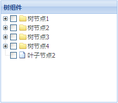

Tree
支持动态数据（ajax异步树）加载和静态数据两种数据加载模式；支持单选和复选；可以绑定树节点点击事件
依赖组件
- FAjax
适用范围
适用于主页面的菜单树，也适用于需要类似于组织机构展现方式。
约束
- 不支持后台组装树的DOM，即dom结构是在浏览器端生成；
- 仅支持异步树，并且每次最多展开一级；
注意事项
- 无
使用示例
基于静态数据初始化树：
json数据格式示例，树的json格式是子嵌套的，children属性里面又是一个树的json结构:
ajax方式加载树数据：
复选模式(selectChildren)，选中父节点子节点自动选中，选中子节点，父节点半选状态：
复选模式(selectParent)，选中子节点父节点全选中，选中父节点子节点状态不变：
树节点点击事件：
属性
| 名称 | 类型 | 描述 | 默认值 |
|---|---|---|---|
| height | String |
组件的高度，可以设置成具体的数值或者auto，如果设置成auto，那么具体高度由组件的内容来决定。 示例： 无 |
"350" |
| id | String |
组件的唯一标识。 示例： 无 |
"" |
| title | String |
组件的唯一标识。 示例： 无 |
"" |
| width | String |
组件的宽度 ,当组件的宽度需要自适应父容器时，可以设置成auto。 示例： 无 |
"250" |
| baseParams | Object |
设置组件的初始化参数，默认为{}。用户可以通过如下方式设置组件初始化参数值：{'code'：'600570','key':'hs'} ,如果使用JSP/freemarker标签，并在标签中直接写入具体的值，那么参数中必须使用单引号。 示例： <f:grid baseParams="{'code'：'600570','key':'hs'}"></f:grid>
|
|
| dataUrl | String |
获取节点数据的请求地址。默认值为：""。 示例： 无 |
"" |
| rootNode | Object |
当rootVisible属性为true时，需要一个虚拟根节点。例如：{'id':'r','text':'根节点',expanded:true,'iconCls':'iconCls'}。说明：expanded属性用于设置根节点是否自动展开第一层树节点。 示例： 无 |
|
| rootVisible | Boolean |
设置根节点是否可见。默认值为true，根节点可见。 示例： 无 |
true |
| selectModel | String |
设置组件的选择模式，默认值为：“normal”，即默认选择模式。可以设置其它值，例如：“selectParent”、"selectChildren"。"selectParent"模式表示选择某个节点，会将其父节点选中。"selectChildren"模式表示选择某个节点，会将其已经渲染好的子节点选中。 示例： 无 |
"normal" |
| staticData | Array[Object] |
静态数据源。默认值为：null。 示例： 数据结构如下：
[{
"id":"node1",
"text": "节点1",
"children":[{
"id"："node2",
"text": "节点2"
}, {
"id":"node3",
"text": "节点3"
}]
}];
|
null |
| syncLoad | Boolean |
是否一次性加载树节点数据，默认值为“false”，即每次只请求子节点数据。 示例： 无 |
false |
事件
| 名称 | 参数 | 描述 |
|---|---|---|
| onLoadError | function(XMLHTTPReques, textStatus, errorThrown) |
请求失败时触发。例如：ajax超时，网络中断。 参数: |
| onLoadfailure | function(data, textStatus, jqXHR) |
请求成功但returnCode为1或者-1时触发。 参数: |
| onLoadsuccess | function(data, textStatus, jqXHR) |
请求成功时触发 参数: |
| onNodeClick | function(nodeData) |
树节点的text区域被点击的时候触发 参数: |
| onNodeDblClick | function(nodeData) |
树节点被双击时触发 参数: |
| onNodeSelect | function(nodeData) |
树节点选中时触发，在selectChildren模式和selectParent模式下有效。 参数: |
| onNodeUnSelect | function(nodeData) |
树节点取消选中时触发，在selectChildren模式和selectParent模式下有效。 参数: |
方法
| 名称 | 参数 | 描述 |
|---|---|---|
| collapseNode | (nodeData) |
收缩指定树节点 参数: |
| expandNode | (nodeData) |
展开指定树节点 参数: |
| getNodeDataById | (id) |
根据树节点的id查找树节点对象 参数: |
| getSelectedNodes | () |
获取选中节点的数据对象。 示例： |
| isExpanded | (nodeData) |
判断树节点是否展开 参数: |
| loadNode | (nodeData, params) |
重新加载节点或者是整棵树，请求的url和参数不变。 参数: |
| setSize | (width, height) |
设置组件的高宽。 参数: |
| setStaticData | (data) |
设置树的静态数据 参数: |